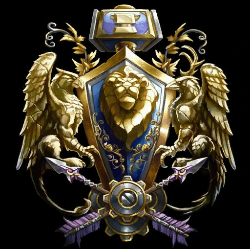
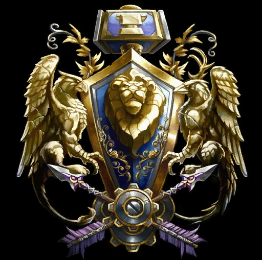

Darkwoods World of Warcraft
A story expansion inspired by the Warcraft universe of Blizzard Entertainment and developed by the Darkwoods WoW Team. This expansion aims to take a different path from the Burning Crusade, emphasizing the familiar Azeroth of Vanilla WoW over the cosmic battle with the Burning Legion. While being heavily based on the lore from Warcraft 3 and Vanilla WoW, Mysteries of Azeroth seeks to enhance the game by adding content that matches the already well-established lore of Warcraft Universe.
Get ready for the brand new adventure that will set you on a journey around Azeroth in a three-part expansion tailored to provide never-before-experienced adventures.
 
